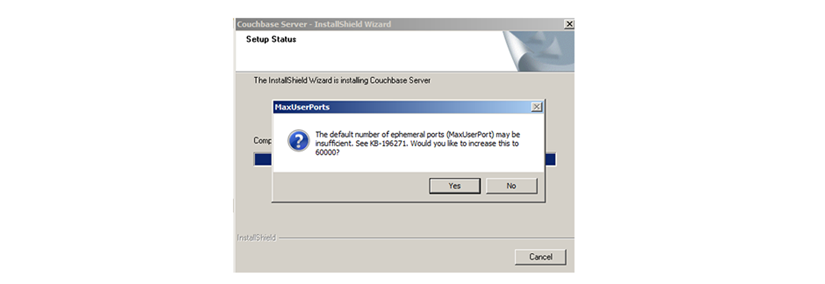
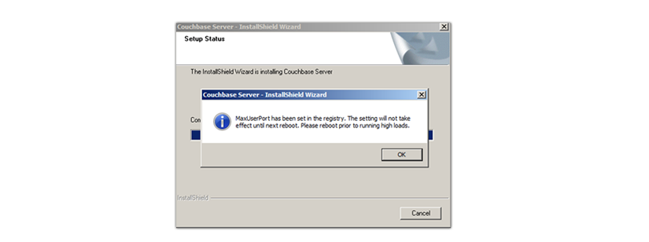

Installing on Windows with the wizard
In this installation, you have to follow the steps defined in the wizard.
- Double click on the downloaded executable file.
The installer for Windows detects if any redistributable packages included with the Couchbase Server need to be installed. If these packages are not already on your system, they are automatically installed along with the Couchbase Server.
- You will be prompted with the
Installation Location screen. You can change the location where the
Couchbase Server application is located, which configures the server location and not the location
where the persistent data is stored.
The installer copies necessary files to the system. During the installation process, the installer also verifies that the default administration port is not already in use by another application. If the default port is unavailable, the installer prompts for a different port to be used for administration of the Couchbase Server. The installer asks you to set up sufficient ports available for the node. By default, Microsoft Server will not have an adequate number of ephemeral ports, see Microsoft Knowledge Base Article 196271
 - Click Yes.
Without a sufficient number of ephemeral ports, a Couchbase cluster fails during rebalance and backup. Other operations, such as client requests, will time out. If you already changed this setting, you can click No. The installer displays this panel to confirm the update:
 - Restart Couchbase Server to apply port changes.
- After installation, follow the server setup instructions.
You can implement this workaround to finish the installation:
- Stop any other browsers and applications that were running when you started installing the Couchbase Server.
- Kill the installation process and uninstall the failed setup.
- Delete or rename the temp location under C:\Users\[logonuser]\AppData\Temp
- Reboot and try again.